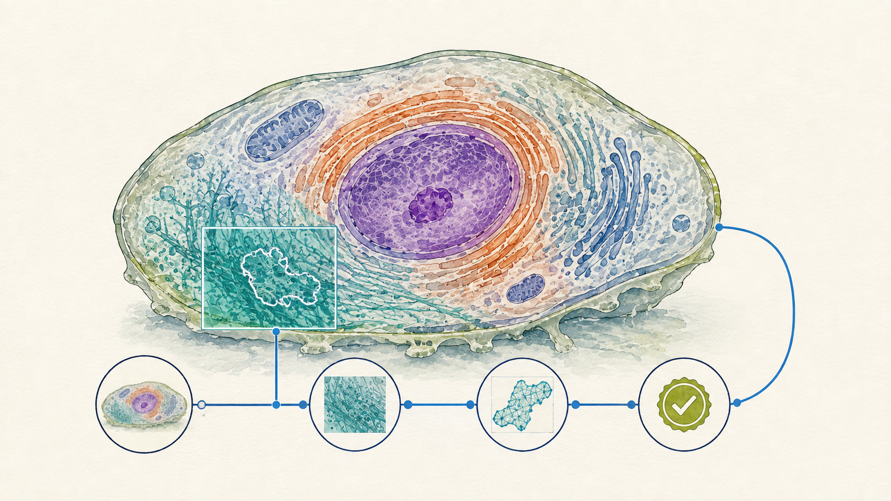

30 November to 4 December 2026
VetMed Winter School
Veterinärmedizinische Universität Wien
Date 30 November to 4 December 2026, five days of six hours Event Veterinärmedizinische Universität Wien Audience administration and research staff, without coding background Teaching language German Status planned

Specialisation
A five-day block week on site, six teaching hours a day, taught in German for administration staff and researchers, and the fullest derivation of the corpus among the registered instances. It follows an AI-competence programme at the same institution, so the entry threshold is lowered by what that series already supplied rather than by repeating it. The register omits one prerequisite the underlying documents state, namely that participants come without a coding background, which is what makes the first two days setup-led.
The stated purpose is a transition, from the pure chat interface to controlled and documented work with code, local models and an agent harness. The didactic line follows a competence framework in levels. Days one and two establish direct chat-based interaction together with local code execution, day three deepens that in independent data work, day four reaches process orchestration with an agent, and day five integrates both in an application project. The cross-cutting competence over all five days is judgement, the ability to assess the quality of a generated artefact, which presupposes domain knowledge no model supplies.
One application project from the participant's own working area runs across the whole week as the through-line, and every new topic is tried on it. Administration participants anchor on report-adjacent or performance-record table data, researchers on measurement data from the institution's core-facility strand. The concrete datasets are not chosen yet, and clearance of input rights is named as a precondition before any model use. Day four adds a strand no other instance carries, running a local model on one's own hardware as practical digital sovereignty, which brings a hardware requirement with it.
Two open points are worth naming. The profile plans an emphasis on European AI regulation inside the fifth module, carried over from the predecessor series, while the day structure instead holds a compact critical block on day one covering social, ecological and legal dimensions and a data-critique block on day three. Whether the profile plan or the day structure governs needs an operator answer, and the reading that these are two different things is an inference. The display title is provisional in every source and stands until the final one is supplied.
The five days
- Fundamentals of generative AI and setup, meaning the model landscape as frontier against open weights, how models work and where their limits are, a compact critical block with digital sovereignty as the bridge to practice, then the working environment and a first script in the terminal.
- Prompt and context engineering plus code in the terminal, with a vague and a precise prompt demonstrated on the same data, then data analysis with model support, run locally and checked.
- Data formats and data work, from tabular to unstructured, structured knowledge representation in Markdown, a data-critique block, then a dataset prepared, transformed and displayed.
- Agent harness and local models, meaning configuring a harness, process control and verification at scale, the data-protection question in this institutional context, and a bounded task delegated to an agent and spot-verified.
- The application project from the participant's own working area, presented at the close, with transfer into everyday work and an outlook beyond the week.
Module coverage
- Understanding Large Language Models, taught in full Day one, with the model landscape and the limits stated before any tool is installed.
- Prompt Engineering, taught in full, with an exercise Day two, demonstrated on the contrast between a vague and a precise prompt on the same data.
- Knowledge and Context Engineering, taught in full, with an exercise Carried by day three, where structured knowledge representation in Markdown becomes the working form for the week's project.
- Agentic Engineering, taught in full, with an exercise Day four, including harness configuration, verification at scale and a local model on the participants' own hardware.
- Critical Perspectives and Governance, taught in full Distributed over the compact critical block of day one and the data-critique block of day three. The planned emphasis on European AI regulation is an open operator question.
Materials
- Slide deck (VetMed Winter School 2026) To be derived from the Full Slide Deck. The register carries no link yet.
- Lecture Notes (VetMed Winter School 2026) In preparation in the instance folder. The concept document still derives from a generic block-week format and is to be rebased on the full corpus.
- Example datasets One administration dataset and one research dataset are still to be chosen, with input rights cleared before use.
Provenance
This instance is a documented specialisation of the Full Slide Deck and the Full Lecture Notes, which are maintained once and cut into five modules. What this instance selects, cuts and adds is recorded in its repository folder, workshops/2026-11-30-vetmed-winter-school.